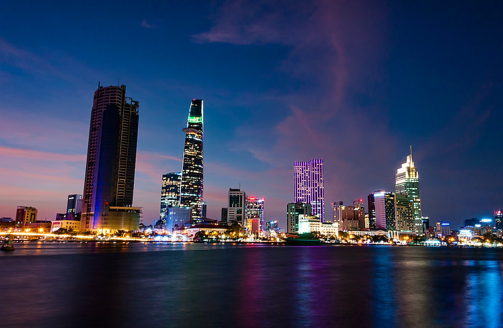
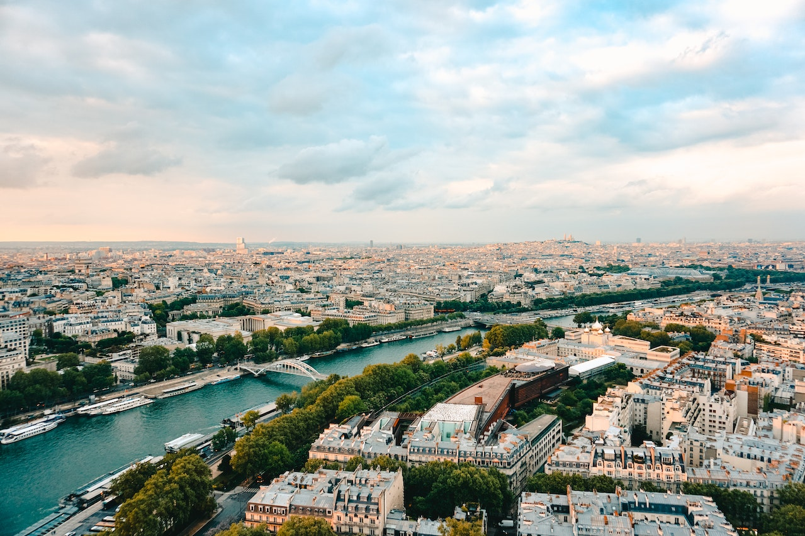
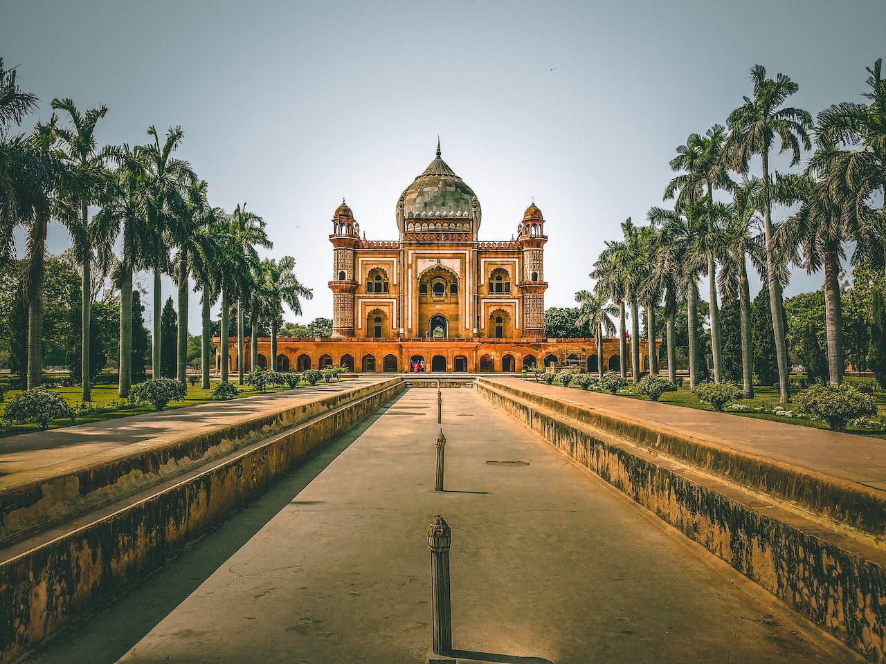
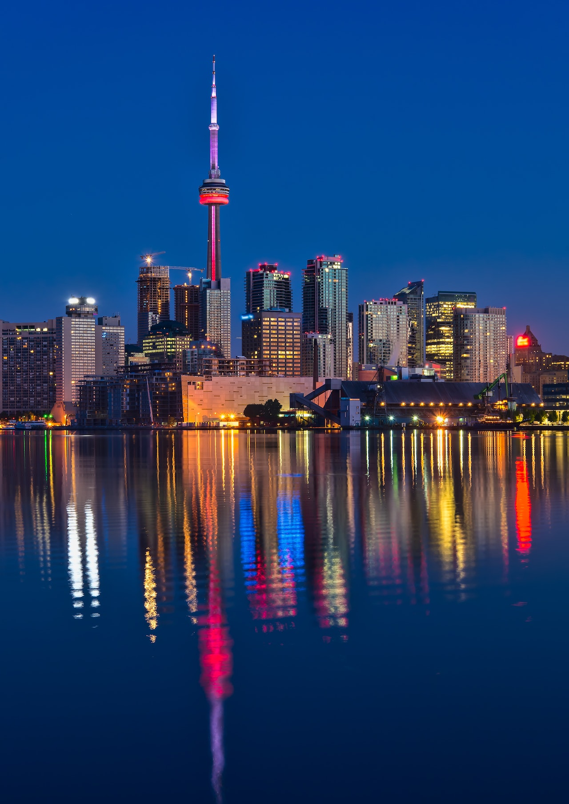
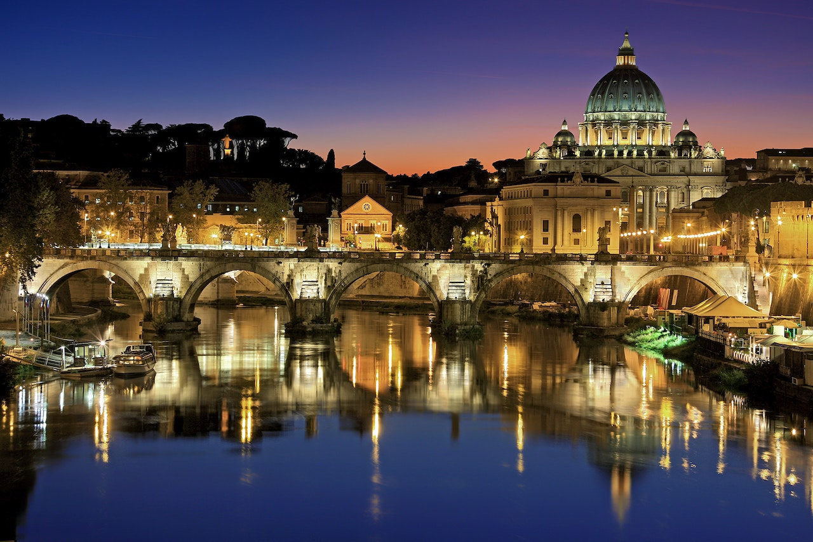
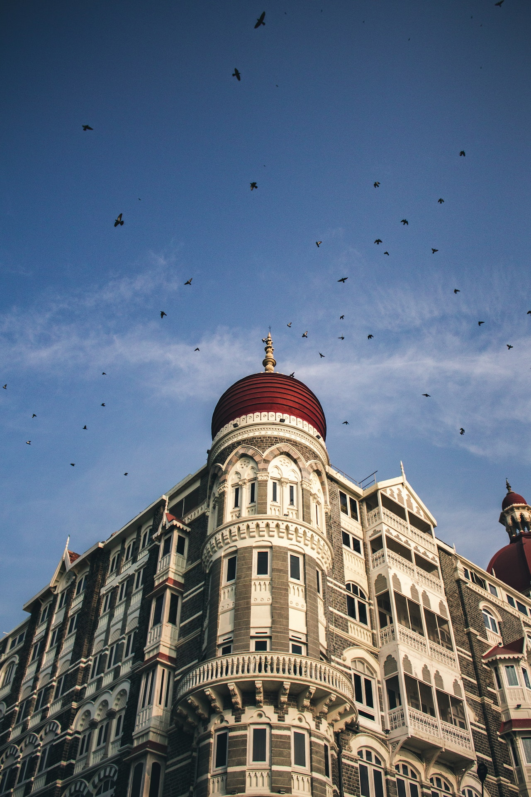
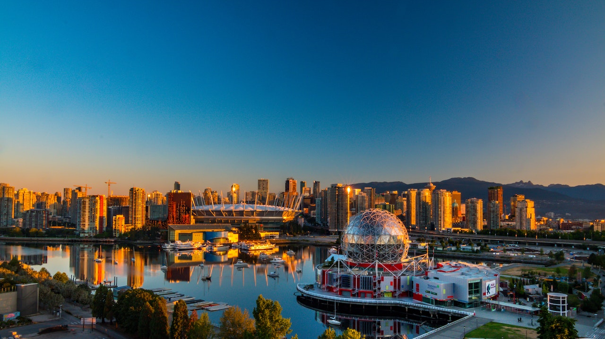
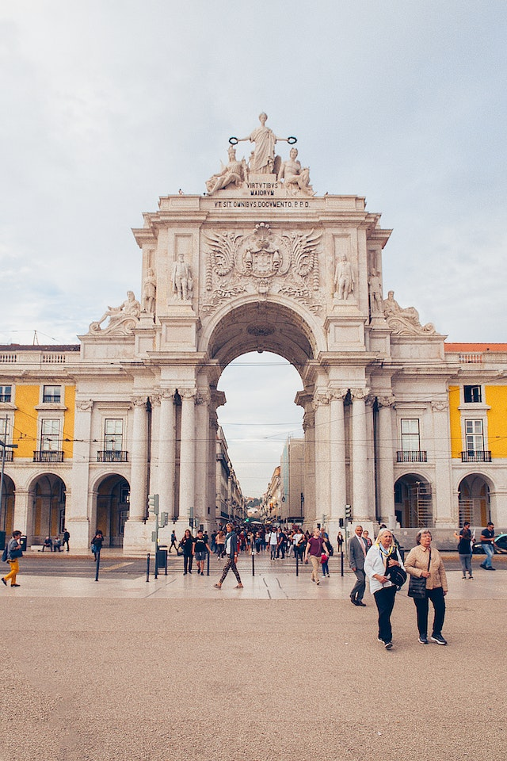
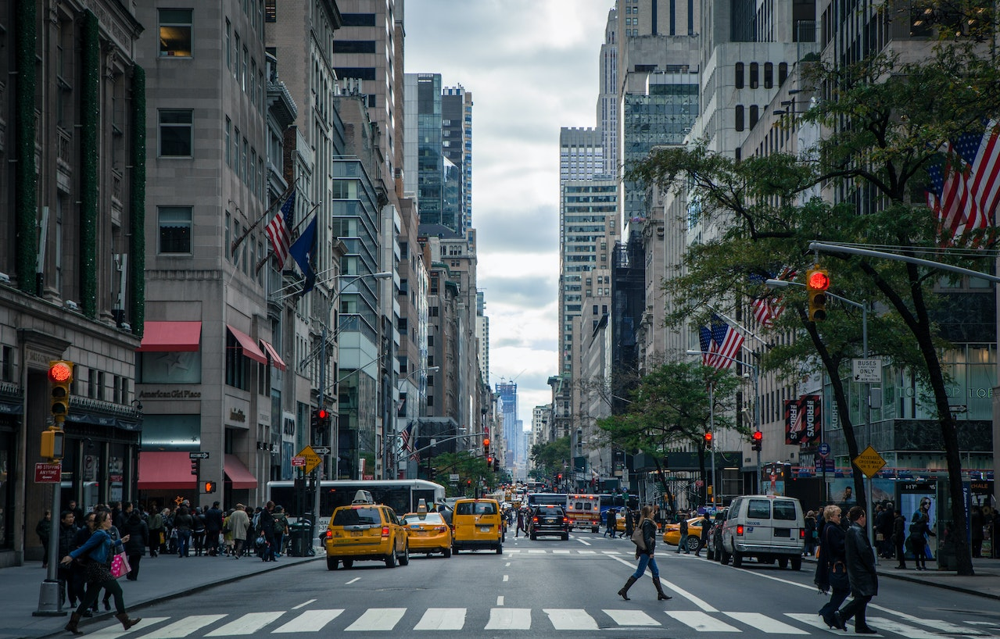

London has been a go-to for many travellers thanks to its wide variety of museums, shops, and restaurants. Visitors will also find beautiful historical structures.

Ho Chi Minh City attracts visitors thanks to its intriguing structures such as temples, skyscrapers, and pagodas, as well as many museums of the country's history.

Paris has cemented itself as a must-see for many tourists. Alongside its most popular attraction the Eiffel Tower, Paris offers interesting food, and a city to explore.

Delhi is home to India's capital New Delhi. Visitors will find many amazing historical monuments, as well as plenty of tourist attractions & markets.

Toronto is filled with activities and sceneries to keep visitors entertained. Home to the iconic CN Tower, Toronto is also a short distance from Niagara Falls.

Rome is home to many historical landmarks such as the Colosseum, Trevi Fountain, and the Pantheon. Visitors may find much more to do in Italy outside of Rome.

Mumbai is rich with iconic architecture, modern cities, nightlife, culture, and food! Visitors will find many locations to fill up their trip with.

For fans of nature, Vancouver offers many great sceneries such as Stanley Park, and the Capilano Suspension Bridge. Vancouver also offers an entertaining city life.

Lisbon is filled with eyecatching architechture, museums, and attractions to keep visitors entertained. Lisbon also offers an inviting culinary world.

New York, or New York City is one of the most popular tourist spots in the world. Visitors will find themselves overwhelmed with choices of activity, but some include the Empire State Building, Statue of Liberty, and the Museum of Modern Art